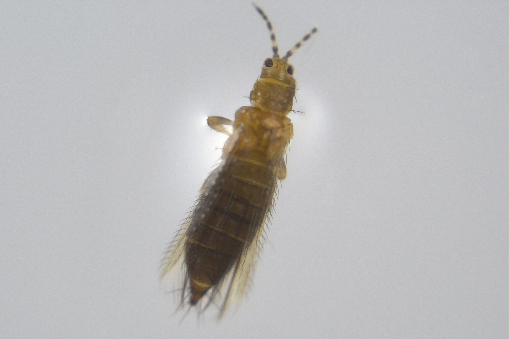
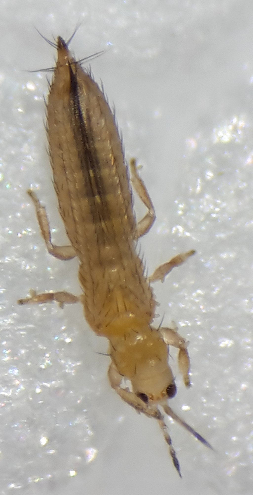

← Toutes les fiches · Ravageur · insecte
Frankliniella occidentalis


Insectes minuscules, minces et agiles, d'environ 1,5 à 2 mm à maturité. Les adultes vont du brun foncé ou noir au jaune paille; les immatures sont blancs ou jaunes avec des yeux rouges. La femelle pond de petits œufs blancs à l'intérieur du tissu foliaire; ils éclosent en 5 à 7 jours. Suivent deux stades larvaires, puis un stade prépupal et un stade pupal, dans le sol ou sur la plante. Le cycle complet prend 12 à 13 jours à 30 °C et jusqu'à 19 jours à 20 °C. Le thrips des petits fruits est l'espèce la plus courante en serre en Ontario.
Développement plus rapide à la chaleur (12–13 jours à 30 °C). Les adultes vivent jusqu'à sept semaines.
Pièges collants jaunes ou bleus et inspection régulière; tapoter boutons et fleurs sur une feuille blanche. Si plusieurs ravageurs sont présents, le jaune est le meilleur choix. Méthode du cours : pièges, souffler dans les fleurs, secouer sur une feuille blanche.
Nombreuses cultures de serre, ornementales et légumières.
Vecteur des virus INSV et TSWV, qui ont une vaste gamme d'hôtes et des symptômes très variés. Pétunia et gourgane servent de plantes indicatrices pour les détecter tôt. Développe vite des résistances aux pesticides.
Fiche du guide Parcelle, version 2026-11-15b. Aucune recommandation de traitement. Les publications de l'Ontario sont écrites pour l'Ontario.